Part 2: Microfacet Material
In this part, I implemented a Microfacet BRDF model with importance sampling to render materials that are only reflective and have specific reflection and roughness attributes, i.e. metals, plastics and other opaque materials.
Roughness value
Unlike with Diffuse BRDFs that used hemisphere sapmling modeled in Part 1 of the project, the Microfacet BRDF produces a more glossy look that reflects light coming from surrounding objects. Additionally we don't sample rays from a hit point in the scene across a uniform hemisphere as in diffuse material modeling in Project 3-1; rather, we importance sample according to a Beckmann NDF. This new distribution function depends on the roughness value alpha of the material, allowing us to render objects to look more reflective (lower alpha or roughness), or more diffuse (higher alpha).
The images below show how we can vary the alpha for a single material (in this case, gold) to go from very glossy to more diffuse reflection. I used 128 samples per pixel and 1 sample per light source with 5 bounces, while varying the alpha between 0.005, 0.05, 0.25 and 0.5:
|
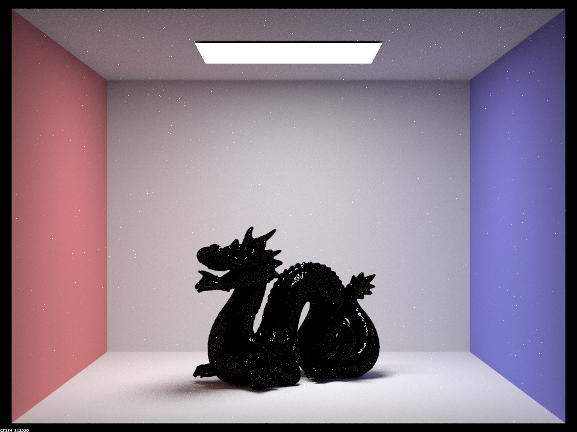
(64 samples/pixel, 1 sample/light, 480x360) |
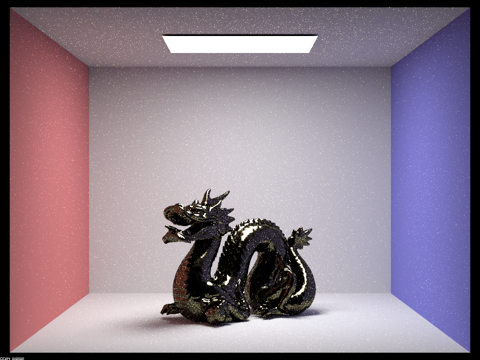
(64 samples/pixel, 1 sample/light, 480x360) |
|
(64 samples/pixel, 1 sample/light, 480x360) |
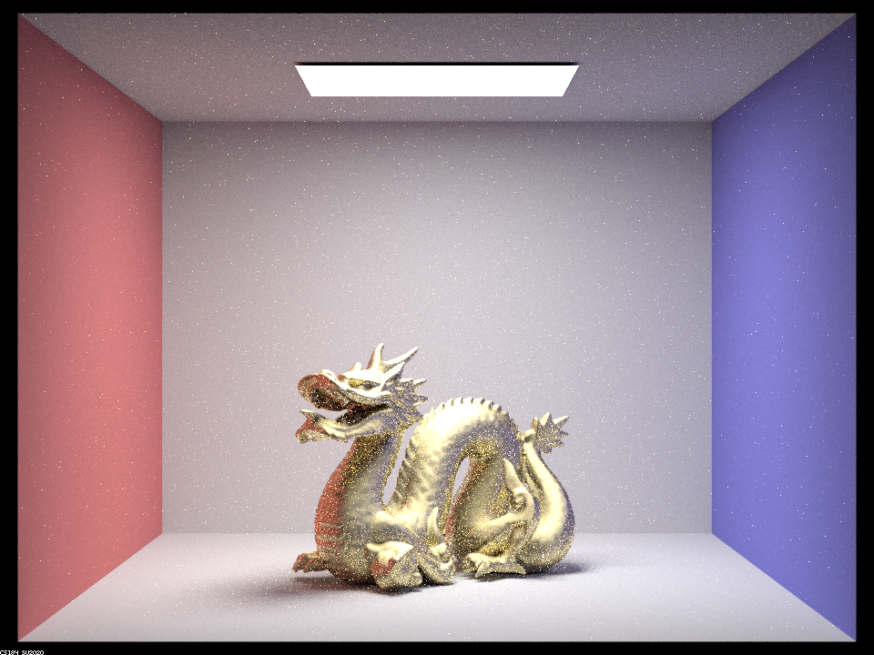
(64 samples/pixel, 1 sample/light, 480x360) |
In the images above, the lower alpha values produce a very glossy dragon while the higher alphas produce one that reflects light more smoothly.
Importance sampling
The importance sampling used in this part randomly samples a new surface normal vector h which is close to the material's surface normal n according to a Beckmann NDF. Then the flected vector wi is computed as the vector reflection of the incoming camera ray wo across from the sampled h. This yields a much better model of reflection than our previous uniform hemisphere sampling, which simply sampled wi directly in any direction out from the hit point on the surface, since we are computing wi as a reflection of the incoming ray wo. The precision of this reflection is modeled by our roughness value alpha, which partly determines how close our computed normal vector h is to the surface normal n. A lower alpha means a more reflective/glossy surface whereas a higher alpha means a more diffuse/rough surface.
Below I show the difference between sampling over a uniform hemisphere as in Project 3-1 and sampling with the importance sampling implemented here. Both objects still use the Microfacet BRDF to achieve a reflective look, yet sample rays according to different distribution functions:
|
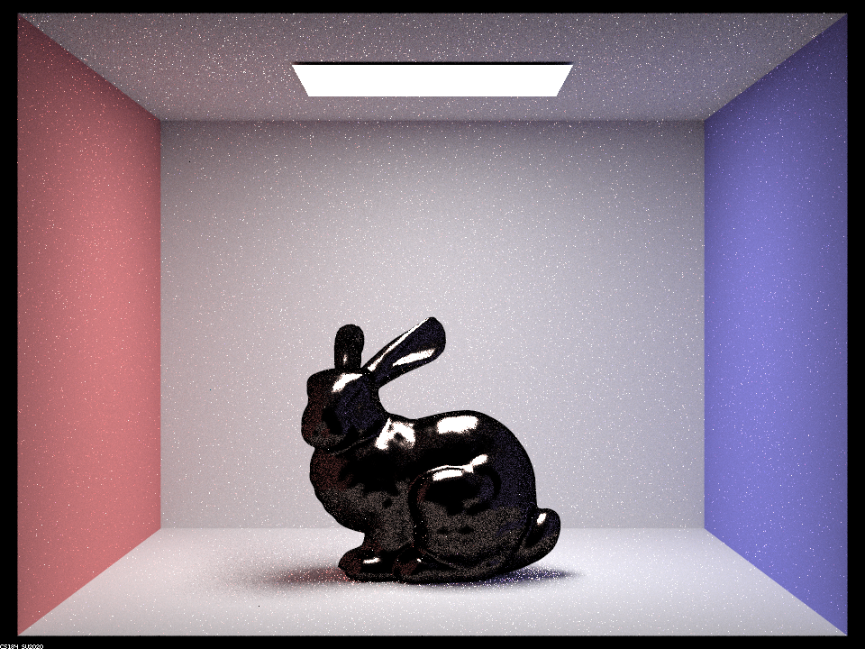
(64 samples/pixel, 1 sample/light, 480x360) |
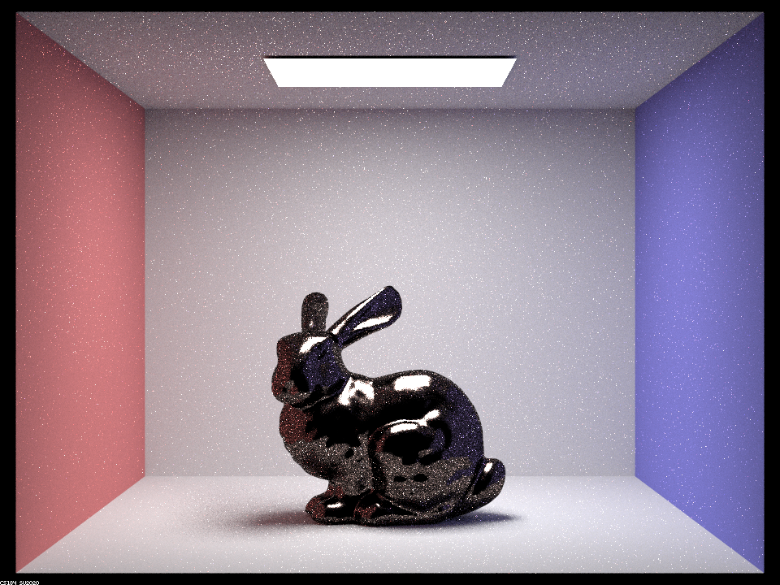
(64 samples/pixel, 1 sample/light, 480x360) |
In the left image, the bounce rays are sampled uniformly over a hemisphere, leading to a larger number of rays being traced to the dark opening of the Cornell box and thus the bunny appears much darker. In the importance sampling, the bounce rays are reflected across our sampled normal vector h as described above. This achieves a more accurate reflective appearance overall.
Modeling different materials
The Microfacet BRDF includes a Fresnel term that affects the radiance value of the material according to refraction indices eta and K. These indices are specific to different materials and are different for each wavelength in the light spectrum. In our model, we compute the Fresnel term for just the three wavelengths corresponding to the r, g, and b of each pixel (614 nm, 549 nm, and 466 nm respectively).
In the images below, I render the dragon with the eta and K values for gold and mercury while keeping all other settings the same:
|
(64 samples/pixel, 1 sample/light, 480x360) |
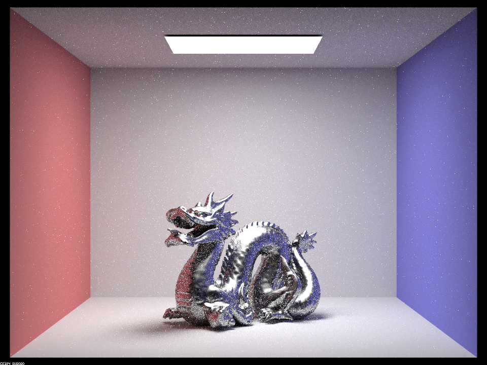
(64 samples/pixel, 1 sample/light, 480x360) |
In the images above, using different eta and K values changes how the Microfacet BRDF alters the r, g, and b values of the radiance computed at the surface points of the dragon. The mercury indices produce generally more silvery colors than the default gold dragon.
Part 4: Depth of Field
In this part, I implemented a new function to generate rays to model a "thin" camera lens with an adjustable aperture and depth of field. This allows us to render our scene with different focusing effects.
In our old camera ray implementation, we trace a ray from straight a single origin point into the scene across an image plane. Because we use a single point, we are erally simulating a "pinhole" camera that renders everything in sharp focus. The lens model should simulate light rays entering not just from one point but across the area of a lens. To simulate this, we modify our model to randomly sample the origin point over a total lens area and trace the ray into the scene from there.
With the the lens model, everything except the objects at the specified focal distance should be blurred. The area that is not blured is at the focus point pFocus, which is the same point to which we trace our ray in the old pinhole camera model. To compute the ray from the camera lens then, we first trace the ray into the scene as in the pinhole model to get the intersection point pFocus. Then, after we sample the point on the lens plane pLens, we subtract that pLens from pFocus to get the new ray direction, and create a ray using the new direction and pLens as the origin (we must make sure these are converted from camera to world coordinates as in Project 3-1).
Varying depth of field
The depth of field is the depth at which objects in the scene will appear in focus. Small depth of field will put closer objects in focus, while a larger one will put far away objects in focus. Below is a focus stack demonstrating our camera lens model using the same aperture but with 4 different depths of field:
|
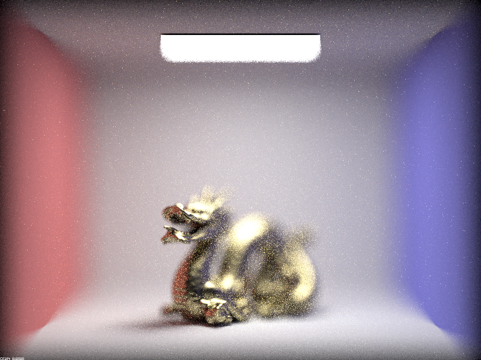
(64 samples/pixel, 1 sample/light, 480x360) |
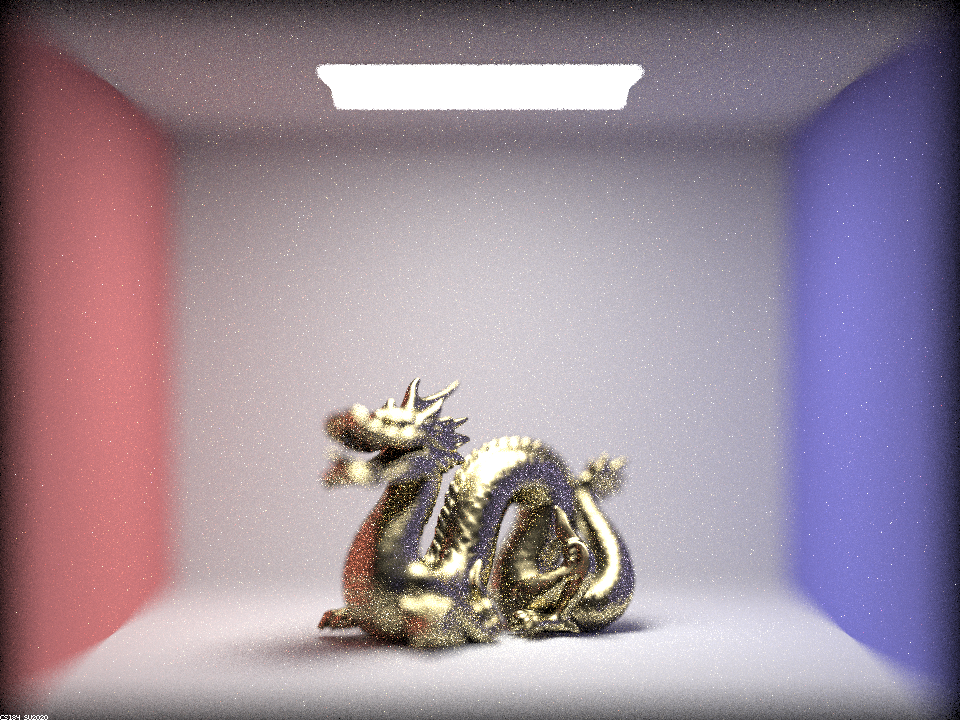
(64 samples/pixel, 1 sample/light, 480x360) |
|
(64 samples/pixel, 1 sample/light, 480x360) |
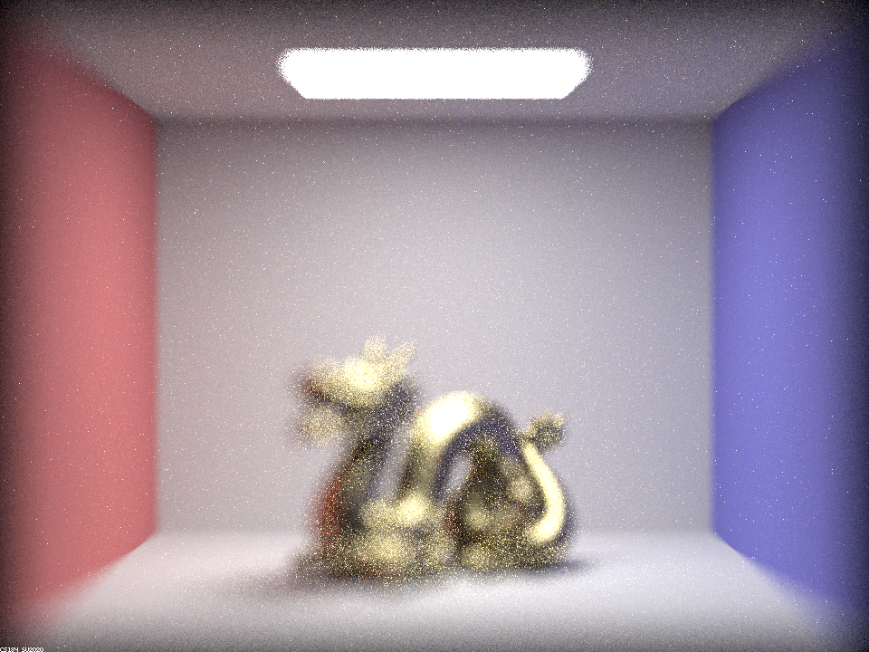
(64 samples/pixel, 1 sample/light, 480x360) |
In the first image, the front of the dragon is in focus while the rest is blurred, and subsequently the middle and tail of the dragon are in focus until in the last image the depth of field is too far and the entire dragon appears blurry.
Varying lens radius (aperture)
The aperture is the area over which our model samples camera rays before tracing them into the scene. Greater lens radius means the out of focus regions will be generally blurrier while smaller lens radius means the out of focus regions will be sharper (a lens radius of 0 is essentially the same as the pinhole camera).
Below are 4 images of the dragon scene set to the same depth of field but with different aperture sizes:
|
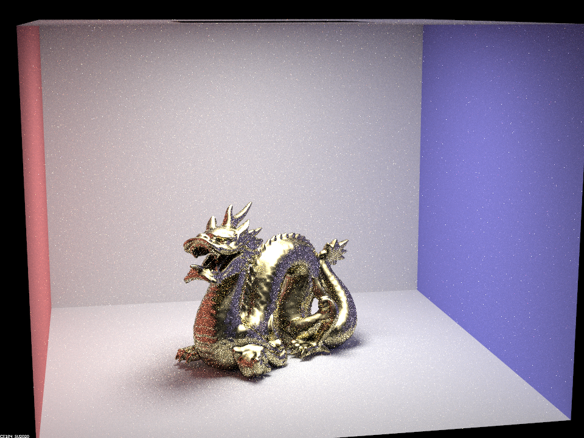
(64 samples/pixel, 1 sample/light, 480x360) |

(64 samples/pixel, 1 sample/light, 480x360) |
|
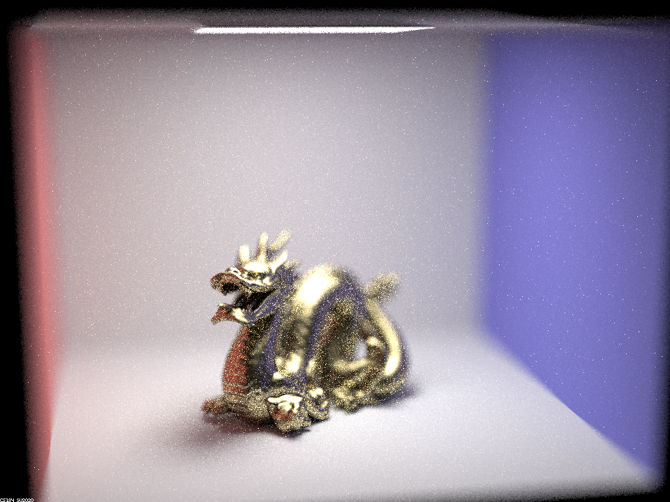
(64 samples/pixel, 1 sample/light, 480x360) |
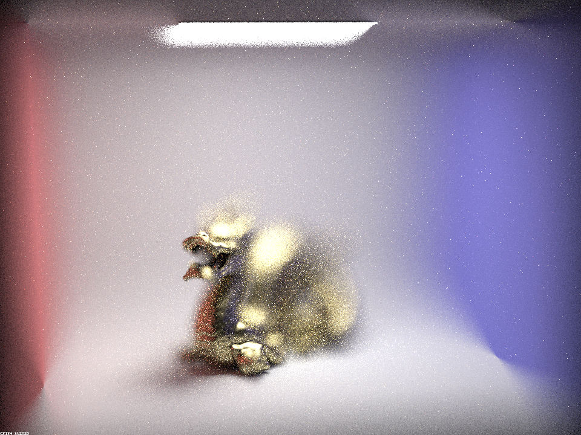
(64 samples/pixel, 1 sample/light, 480x360) |
In the first image above, the aperture is so small that the entire image is sharp (we have basically reproduced the pinhole camera model we were using before implementing the camera lens model). In the next image we get some blurring but by the bottom-left image with lens radius 0.25, we can clearly make out where the depth of field is. In the last image the aperture is so large that the regions outside the focus point are almost too blurry to make out.
After Parts 2 and 4 implemented as described above, we can now render cool images such as the one below:

(256 samples/pixel, 4 samples/light, 960x720) |